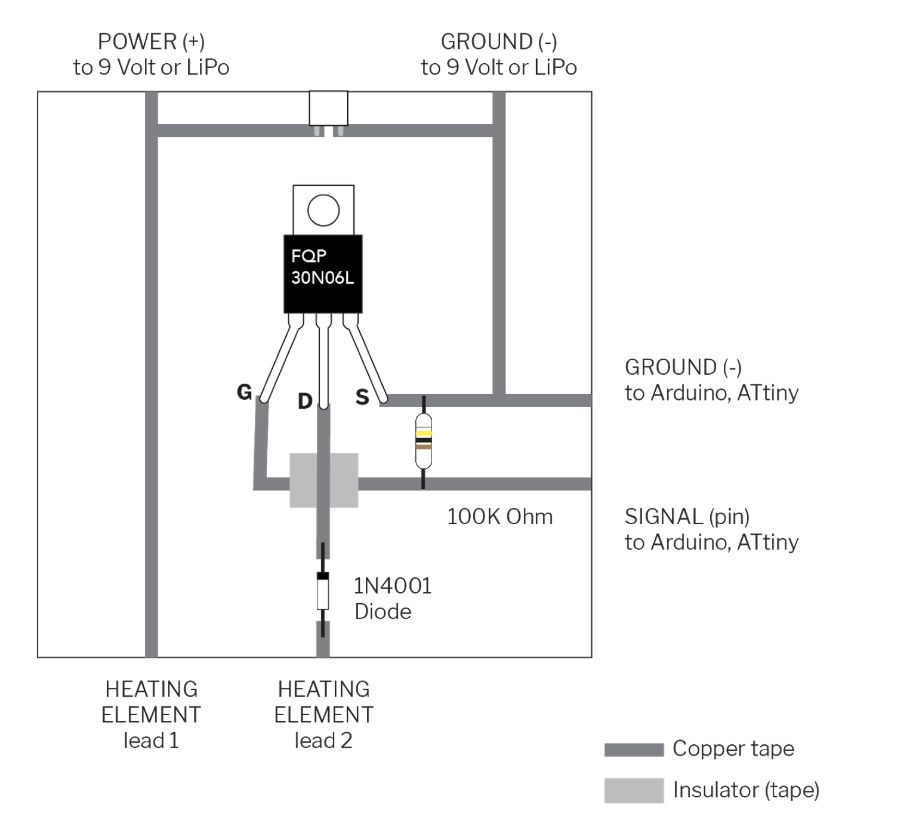
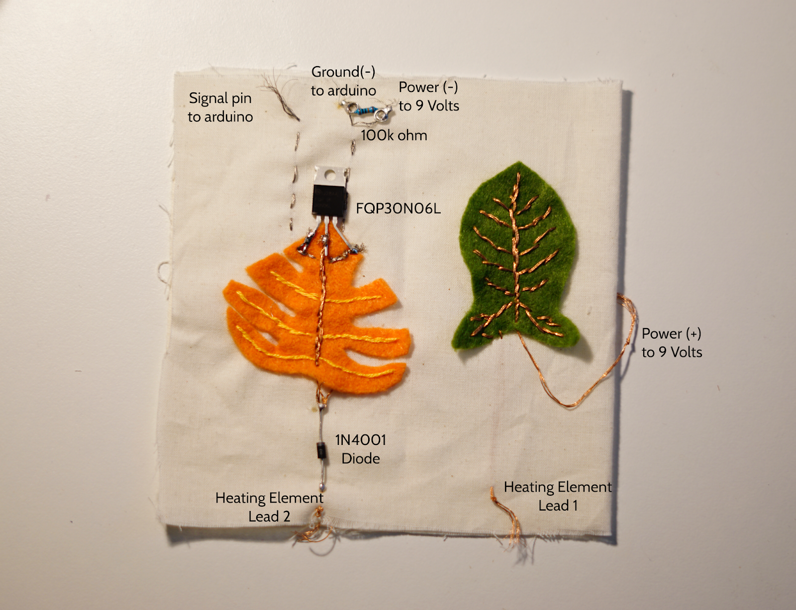
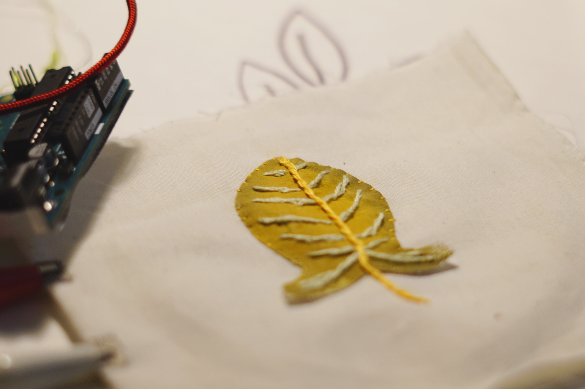
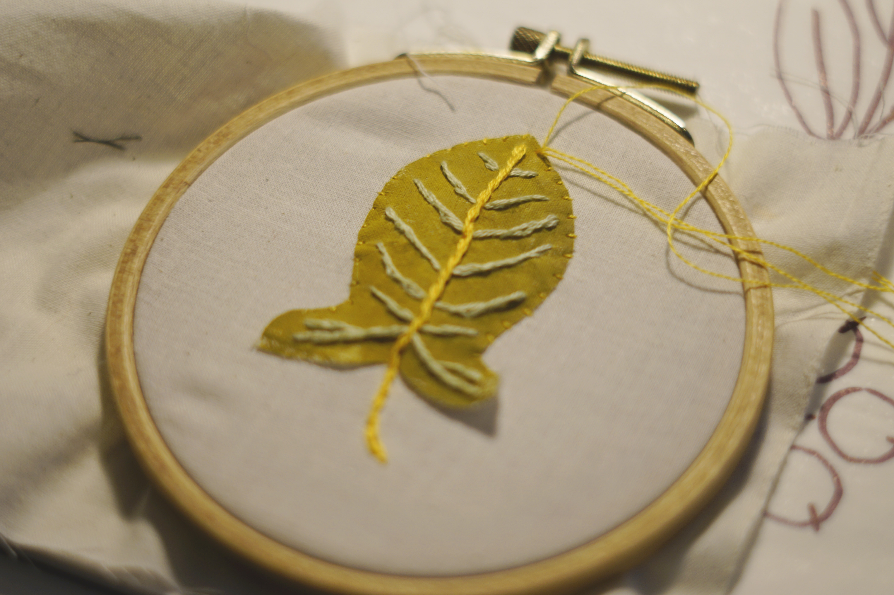
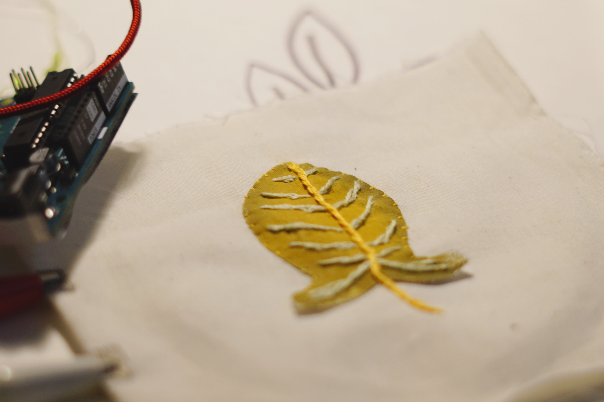
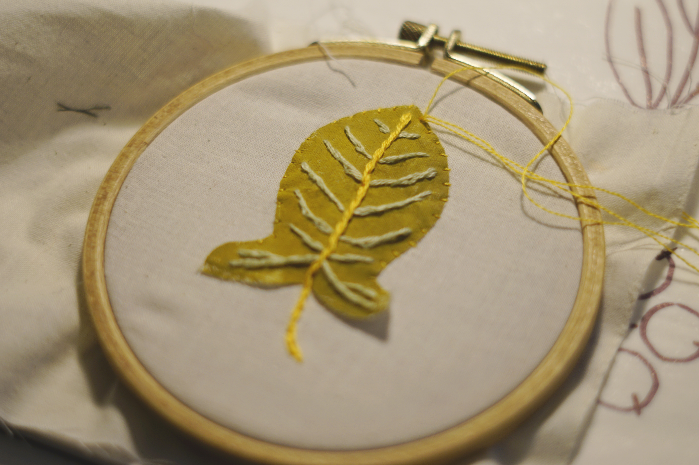

I would like to build several book pages with fabric and soft circuit, to reproduce the beauty of these plants living in winter. Potential materials I may use are: fabric, thread, conductive thread, conductive fabrics, arduino, ATtiny, RGB LED, thermochromic ink, memory alloy, flip dot (not yet included).
This is a personal project . I made the projection mapping, soft circuit, and animations


When we use heating circuit in class, we choose the most productive way to make it. In our Computational Craft class, we use copper tape to build the circuit.However, in our soft circuit making process, sometimes we may need to change the circuit to looks like our craft theme. Here's my design.
  


